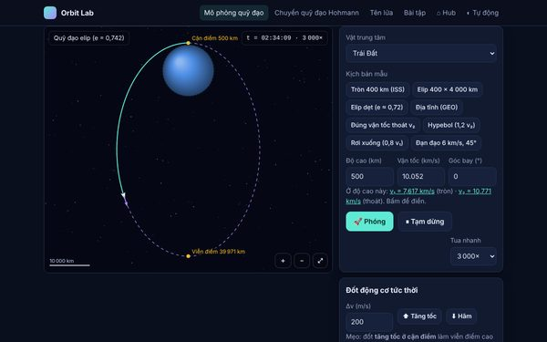
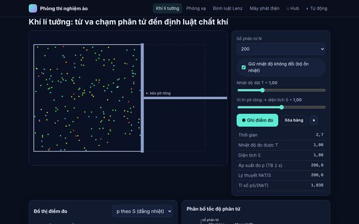
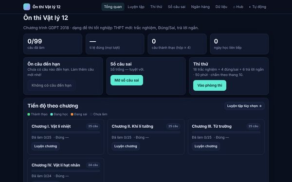
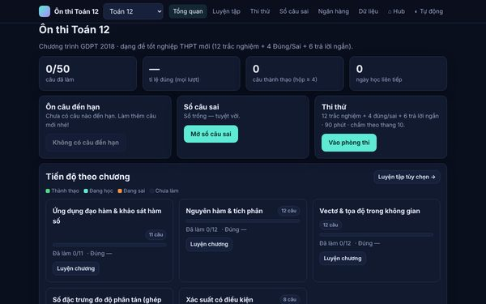
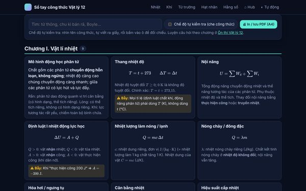
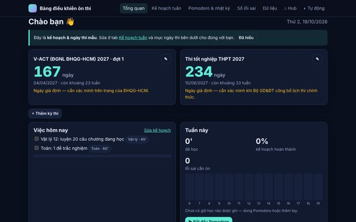
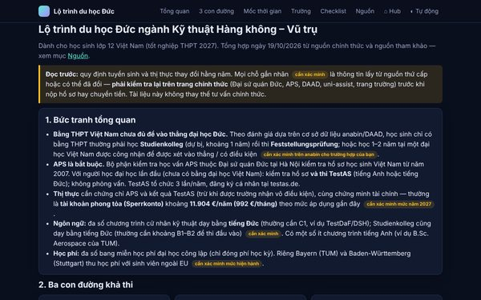
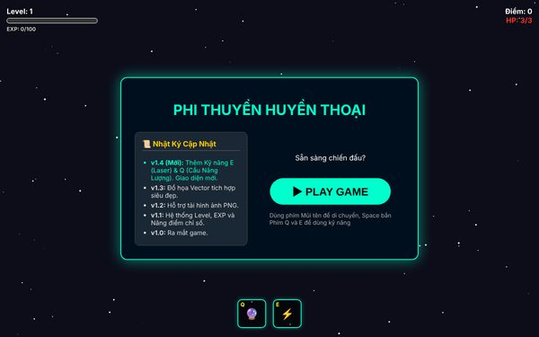

Học Vật lý bằng cách xây công cụ
Bộ công cụ học tập tôi dùng để ôn thi tốt nghiệp THPT & V-ACT và chuẩn bị cho ngành Kỹ thuật Hàng không – Vũ trụ: từ ngân hàng câu hỏi có lời giải, mô phỏng quỹ đạo vệ tinh, đến phòng thí nghiệm ảo. Mọi thứ chạy ngay trên trình duyệt, không cần cài đặt, và được kiểm thử tự động.
173câu hỏi có lời giải (Vật lý, Toán, V-ACT)
140đáp số được máy tính tính lại độc lập
7mô phỏng vật lý tương tác
340+phép kiểm thử tự động (Node + trình duyệt)
Dự án







Phi Thuyền (game)
Game bắn phi thuyền trên canvas với hệ thống kỹ năng, kinh nghiệm và nâng cấp — dự án lập trình web đầu tiên.
Cách mình làm: đúng trước, đẹp sau
- Lõi tách khỏi giao diện. Phần vật lý (
orbit.js,labs-core.js) là JavaScript thuần chạy được trong Node để kiểm thử. - Kiểm với giá trị tham chiếu. v₁ = 7,91 km/s, bán kính địa tĩnh 42 164 km, Hohmann Trái Đất → Sao Hỏa 259 ngày… đều được kiểm tự động.
- Đáp án được tính lại độc lập. Script đọc ngân hàng câu hỏi, tính lại từng đáp số và kiểm rằng không phương án nhiễu nào trùng đáp án đúng.
- Kiểm thử trên trình duyệt thật. Playwright mở từng trang, bấm như người dùng, chụp ảnh, kiểm tra điện thoại 375 px và console sạch lỗi.
- Trung thực về giới hạn. Mô hình đơn giản hóa và thông tin chưa chắc đều được ghi rõ là "cần xác minh".
Công nghệ: HTML/CSS/JavaScript thuần (không framework, không bước build), Canvas 2D, KaTeX (đặt sẵn offline), Node.js + Playwright cho kiểm thử. Chạy offline bằng cách mở tệp; đưa lên GitHub Pages là dùng được.